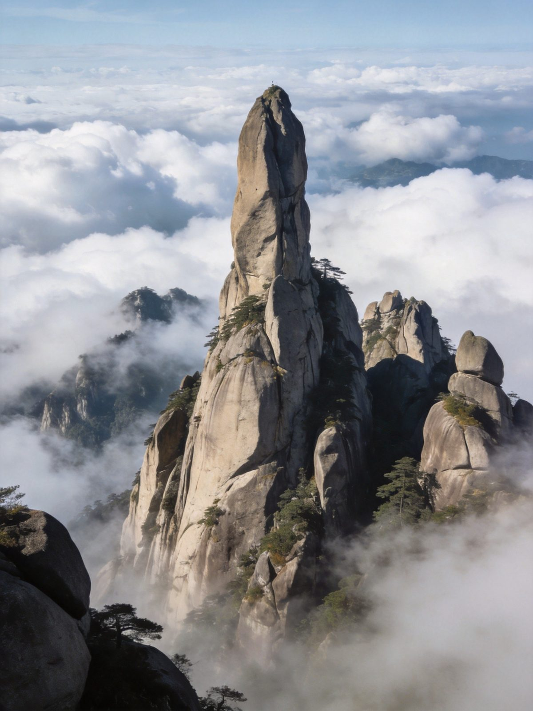
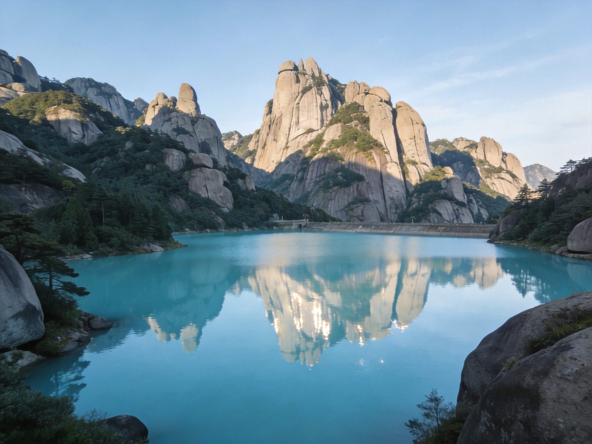
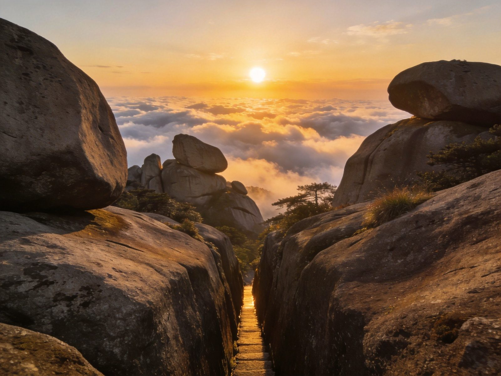

⛰️ 天柱山 · MT. TIANZHU
天柱山 · 擎天一柱花岗岩奇峰全攻略
安徽「黄山、九华、天柱」三大名山之一，全球地质公园与 5A 级景区，也是一座以花岗岩峰林著称的奇山。天柱峰一柱擎天、神秘谷迷宫般的石窟幽谷、炼丹湖高山平湖、飞来峰异石耸立。门票旺季 130 元，潜山高铁站直达，是皖西南一条性价比极高的奇山之旅。本文含 1 日/2 日双方案、门票预约、索道交通、住宿美食、预算避坑全讲清。
📍 目的地：安徽安庆 · 潜山市天柱山
👥 1–6 人自由行
⏱️ 1 日 / 2 日 双方案
💰 旺季130 · 淡季110
⚡1 日精华 · 快充版
经典「神秘谷—天柱峰」环线：索道上、沿天柱山主干道把奇峰、幽谷、异石一次看透，一天完成核心必看。
👥 1–3 人适配：天柱山索道有三大条（大龙窝/牧羊河/龙潭河，7:00–17:30）；大龙窝索道最常用，买张往返省体力。
🗺️ 行程安排
-
上午 · 索道上 + 神秘谷
🚄 潜山高铁站→景区（班车/打车）🚡 大龙窝/龙潭河索道上山
🕳️ 神秘谷（花岗岩石窟峡谷迷宫）
⚠️ 景区 6:30 开园、11:30 依客流停售，15:30 全网停售；建议一早就上山错峰。
-
中午 · 天柱峰 + 天池
🗼 天柱峰（一柱擎天，天柱山标志）🪞 天池/莲花峰远眺
🍱 山顶简餐/自备干粮
💡 天柱峰是「安徽三山」的招牌，观景台顺光机位最佳；正午前后光线最通透。
-
下午 · 炼丹湖 + 索道下山
🌊 炼丹湖（高山平湖，天色映照）🪨 飞来峰（飞来石异景）
🚡 索道下山 → 返程
💡 时间充裕可加走「振风塔—月牙峰」支线；傍晚石门关看晚霞别错过。
🌿2 日深度 · 松弛版
第一天悠着走完主峰环线，第二天打卡炼丹湖与飞来峰，慢下来看日出云海与花岗岩地质奇观。
👥 1–3 人适配：想住山上少（山顶住宿有限），住山下天柱山镇最方便；清晨上山看云海概率最高。
🗺️ 行程安排
-
DAY 1 · 神秘谷 + 天柱峰主环线
🕳️ 神秘谷 / 飞来峰🗼 天柱峰 + 天池
🌊 傍晚炼丹湖看晚霞🏨 住天柱山镇
💡 主峰环线约需 5–6 小时，预留充足时间慢慢走，别贪进度。
-
DAY 2 · 炼丹湖日出 + 地质观景 → 返程
🌅 清晨炼丹湖/峰顶看日出云海⛰️ 补走余下山谷/栈道
🚌 下午返潜山高铁站
⚠️ 天柱山山顶温差大、风大，看日出务必带外套；雨雪天部分栈道可能临时关闭。
⭐天柱山核心景点 · 单独详览
把天柱山最有辨识度的 5 个点单独拎出来说清楚——值不值得去、怎么玩、在哪。

天柱峰 · 一柱擎天
主峰区
天柱峰 · 天柱山的灵魂
天柱山因「一柱擎天」得名，天柱峰就是那根直插云霄的花岗岩巨柱。峭壁如削、气势磅礴，峰顶海拔约 1489 米，是安徽「三山」中最具天地敬畏感的一峰。晴天远眺，群峰拱卫、云海翻涌。
👍 必去理由：天柱山第一打卡点。观景台顺光机位最佳，雨后放晴云海最震撼。

神秘谷 · 石窟迷宫
南麓
神秘谷 · 花岗岩天然迷宫
天柱山最富趣味的自然奇观，岩体崩解堆叠形成的石窟峡谷，曲折幽深、光影斑驳，如走入一座巨大的天然迷宫。栈道穿行其间，抬头是刀削般的巨岩，俯身是可攀可钻的幽洞。
👍 必去理由：天柱山独有体验。穿洞攀岩别有趣味，适合喜欢探秘的旅人。

炼丹湖 · 高山平湖
山腰
炼丹湖 · 青山翠水相映
天柱山上一片难得的高山平湖，因传说道家长寿仙人于此炼丹得名。湖水碧蓝澄净，倒映四周青翠山色与奇峰，是登顶途中一处赏心休憩的风景线。
👍 必去理由：主峰环线上的温柔调剂。傍晚与清晨看倒影最清，适合放慢脚步。
飞来峰 · 奇石耸立
主峰区
飞来峰 · 异石风情
天柱山以奇石著称，飞来峰上怪石嶙峋、形态各异的峰林耸立，与天柱峰遥相呼应。观景台是拍「飞来石」「仙人晒靴」等地标奇石的最佳位置，亦是主峰环线高光路段。
👍 必去理由：花岗岩峰林精华浓缩处。顺着主峰环线即到，驻足赏石、拍照打卡。
花岗岩峰林 · 地质奇观
全域
花岗岩峰林 · 世界地质公园
天柱山是联合国教科文组织确定的「全球地质公园」，花岗岩峰林、石柱、洞穴、峡谷地质景观在全国名列前茅。峰、石、洞、瀑景观高度集中，是研习地质与欣赏地貌的双重打卡地。
👍 必去理由：看山更看地质。峰林连续性强，随光角不同变幻万千，摄影师友好。
🚗怎么去：高铁 vs 自驾
潜山高铁站开通后，从合肥、南京、武汉等地高铁直达，是皖西南最方便的名山之一。
天柱山高铁/自驾两种交通方式对比
| 方式 | 🚄 高铁 | 🚗 自驾 |
|---|
| 时长/成本 |
潜山站→景区有班车/打车；合肥、南京、武汉等高铁 2–3h 直达 |
沪渝/济广高速至潜山，江浙皖来程 3–5h 可达 |
|---|
| 适合人群 |
✔ 省心首推：高铁直达 + 景区接驳 |
自驾游、周边出发、带家人 |
|---|
| 注意 |
到站后留意景区直通班车/打车，旺季末班较早 |
山下停车场旺季紧张，需提前进山 |
|---|
| 💡 一句话建议：高铁到潜山站最省心，去景区有班车；天柱山整体比黄山人少、门票更便宜，是「三大名山」里性价比之选。 |
|---|
📱 门票与预约：旺季（3.16–11.15）130 元、淡季 110 元；景区实行实名预约（提前 1 天），日承载约 5 万人；开放 6:30–18:00、11:30 停售上午票、15:30 全网停售。
🏨住宿推荐
天柱山镇近景区、吃饭方便是主流选择，三档价位供参考。
经济型
潜山县城/镇民宿
约 90–200 元/晚 · 人均 45–100
干净实惠，离车站近，适合预算型的快充行程。
舒适型
天柱山镇精品酒店
约 220–450 元/晚 · 人均 110–230
近游客中心，含早、设施完善，早起进山最方便。
度假体验
温泉/半山度假酒店
约 450–1000 元/晚 · 人均 230–500
山下温泉酒店可泡汤解乏，适合度假放松、带家人。
🍜天柱山必吃清单
皖西南风味，山笋、河鲜与山间野味是特色。
💰预算对比（人均）
含 1–3 人出行说明；区间为保守–宽松，实际以选择为准。
天柱山1日与2日方案人均预算对比
| 项目 | 1日精华版 | 2日深度版 |
|---|
| 大交通（安徽往返人均） | 约 150–300 | 约 150–400 |
|---|
| 门票（旺季） | 130 | 130 |
|---|
| 索道（往返） | 约 120–160 | 约 120–160 |
|---|
| 住宿 | —（当日往返） | 1 晚 90–500 |
|---|
| 餐饮 | 约 50–100 | 约 120–240 |
|---|
| 合计 · 人均 | 约 450–700 | 约 550–1450 |
|---|
💡 省法：淡季（11 月中–次年 3 月中）门票 110 元、人少看云更爽；学生/老年半价；只买单程索道+徒步下山能再压预算；山顶备干粮可省山顶溢价餐费。
🧭避坑 & 实用贴士
- 提前预约：天柱山实行实名预约，官方平台提前 1 天购票，日承载约 5 万人；节假日务必提前约，现场不一定有余票。
- 预留时间停售早：上午票 11:30 停售，全天 15:30 全网停售、18:00 闭园；下午才到容易被「关门外」，尽量上午进山。
- 索道按需选：大龙窝/牧羊河/龙潭河三条索道 7:00–17:30；主峰环线常用大龙窝索道，往返最省力，体力好可挑战徒步一段。
- 神秘谷别走散：幽谷石窟曲折，结伴同行、注意脚下湿滑，部分穿洞需蹲行，背包别太累赘。
- 山顶温差大：山顶风大、早晚凉，夏秋也建议带一件外套；雨雪天部分栈道临时关闭，出发前查天气。
- 看云海要趁早：清晨与雨后放晴是云海高发时段，想看就按 6:30 开园第一批上山、直奔主峰观景台。